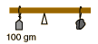
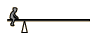
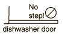

Torque and Equilibrium
The two conditions for an object to be in equilibrium are (1) zero net force and (2) zero net torque on the object. This experiment will deal with rotational equilibrium and torques. Torque is a measure of a force's tendency to produce rotation and can be defined by
Torque = Force x Lever arm
where the lever arm is the perpendicular distance from the axis of rotation to the line of action of the force. This is illustrated in the diagram below for a bicycle pedal; at different points in the pedaling motion the force of the rider's foot is more effective in producing rotation because the lever arm is longer.
When more than one torque acts to produce rotation about an axis it is often convenient to divide them into clockwise and counterclockwise torques, and the condition for rotational equilibrium is then
Sum of clockwise torques = Sum of counterclockwise torques
| Write down your thoughts on these questions before beginning the experiment. | |
|  | If you were caught without a mass balance, how could you get a number for the mass of the rock? |
|  | This poor child has no one to play with, and had to design a "solitary see-saw". If the invisible partner is the total mass of the board, where is this invisible partner sitting? |
 | Why is it hard to lift a long board by its end? |
|  | Why is it not a good idea to use your dishwasher door as a step to get something out of the cabinet above it? |
Procedure:
I. Balancing with multiple torques
1. Balance the meter stick in a horizontal position on its knife-edge supports with no weights attached. Record the point on the stick at with it balances.
2. Suspend three masses from the meter stick as indicated in the sketch and move them until you balance the meter stick. Record the mass values and their positions.
3. Determine the lever arm associated with each mass and record the values in the data table below. Compute the mass times the lever arm for each mass. (The torque, strictly speaking, is the weight times the lever arm. But the mass times the lever arm differs only by the constant g, the acceleration of gravity, so for the balance condition it serves the same purpose.)
4. Compare the clockwise and counterclockwise torques. How much does the net torque differ from the theoretical value of zero?
Data: Pivot point on meter stick _____________
II. Determination of unknown mass
1. After removing the other masses, suspend the supplied unknown mass from a convenient point on one side of the meter stick. Use one of your known masses to produce rotational equilibrium and compute the unknown mass. Then mass the unknown on the pan balance and compare your results.
Data:
Unknown mass (calculated from above) _____________
Unknown mass (from pan balance) ______________
difference _________________
III. Determination of meter stick mass
1. Move the meter stick in its support so that the new pivot point is 10 cm away from its balance point. Restore balance by hanging a known mass from one side of the meter stick. Use the equilibrium condition to determine the meter stick mass and check your result by massing the stick on the pan balance.
Data:
Meter stick mass calculated ________________
pan balance _______________
difference _________________
Apparatus movie